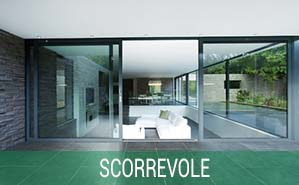

Finestre realizate in PVC marca Gealan, diversi profili con possibilita di arivare ad una transmittanza termica Uw: 0.89 W/m2k

Scorrevole e grandi progetti luminosita maxima con altisimi liveli di sicurezza.

Portefinestre mono/bicolorate
Riducono rumorisita fino ad un massimo di 47 db.